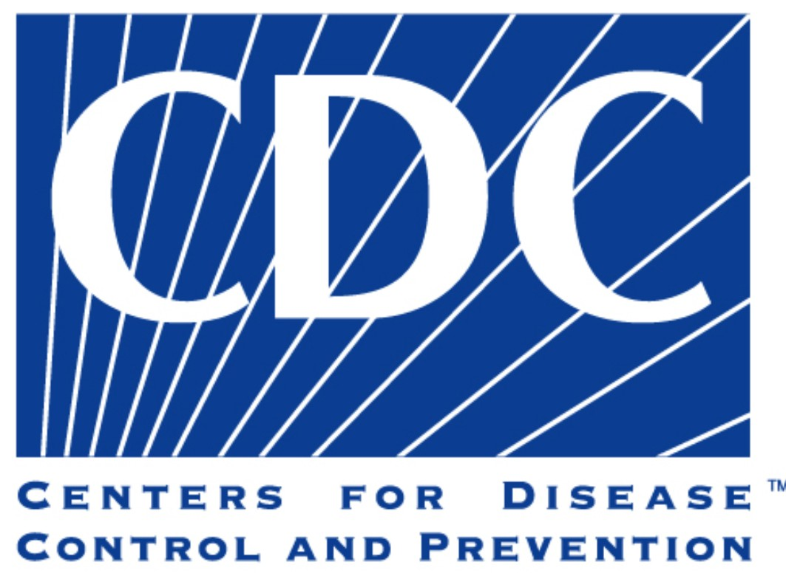

Industry
Industry Background
The HPH Sector is responsible for providing goods and services integral to maintaining health security.
Services Include:
- building and sustaining community health resilience
- improving health related situational awareness capabilities
- enhancing the integration of HPH capabilities into emergency management systems in effective ways
- strengthening global health security
Relevant Organizations:
- Center for Disease Control (CDC)
- National Institutes of Health (NIH)
- Food and Drug Administration (FDA)

Relevant Threat Trends
Threat trending is the process of modeling an organizations’ threat landscape by using industry reports.
This allows an organization to forecast and plan for the future, improve CTI effectiveness as global and local threat landscapes change,
and justify the development of CTI capabilities.
GLOBAL: The threat to the healthcare industry is increasing
- Healthcare data breaches of 500 or more records has risen every year since 2009 (HIPAA Journal, 2019)
- Migration to the cloud, ransomware attacks, and human error present the greatest threats to the industry in the future (Global Market Insight, 2019)
- The average cost of a data breach in the healthcare industry is $7.13 million (IBM, 2021)
- Average cost of a breached record has increased from $408 in 2018 to $429 in 2019 (HIPAA Journal, 2019)
GLOBAL: Ransomware is the top threat to healthcare organizations
- 172 ransomware incidents have cost the U.S. healthcare industry more than $157 million since 2016 (Forbes, 2020)
- 4% of organizations targeted by ransomware attacks were hospitals & clinics (Comparitech, 2020)
LOCAL: Magellan Health, a fortune 500 company discovered a breach of its systems in Arizona in April, 2020
- By August 2020, 1.7 million records have been breached and the number of impacted individuals continues to grow
Critical Asset Identification
Critical asset identification is necessary to pinpoint what an organization must protect based on current threat climate.
This allows for proper CTI investment and effort. Critical assets are any data/systems that will cause major impact to the organization if breached.
The assets that are most critical to the Healthcare and Public Health Sector.
| Asset |
Value |
Impact Of Breach |
| Physical Assets |
Facilities and medical equipment allow for treatment of patients |
Monetary loss, inability to properly treat patients |
| Confidential Data |
Contains information on and history of patients |
Loss of medical history, damage to reputation, identity theft |
| Public Trust |
Encourages people to protect themselves and others through available medical treatment |
More sick people, more deaths, higher medical fees |
| Information Systems |
Operational and health record management |
Inability to properly treat patients, monetary loss |